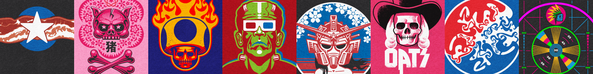
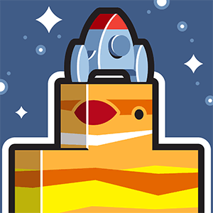
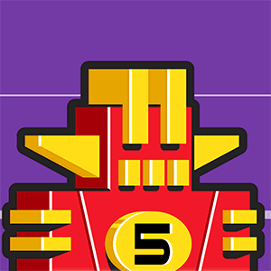
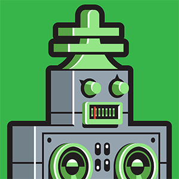
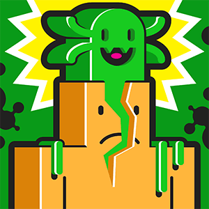
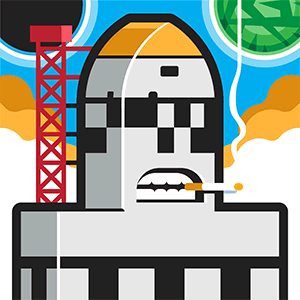
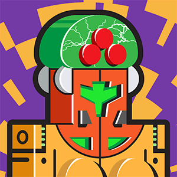
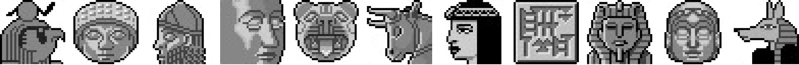

Regarding the socials, read my twxxts on Twxttxr, observe my random art-ishness on Instagram, and watch things I made to move about on YouTube.
Layers is a new place for creatives to share their projects (in lieu of Dribbble, et al), and as Mom taught to me do, I share too.
I peddle a few t-shirts at TeePublic, which I've so far found to be of the best quality of all such print-on-demand graphic tee services. But I'd be a total hipster snob if I only bought my own creations, and I like to stretch my t-shirt dollar, so I frequent 6 Dollar Shirts, home of many "I wish I'd thought of that!" designs.

I never found it useful, but I did spend a day or two loading up the portfolio portion of my Behance account, which is offered to all Adobe subscribers. It's a place to see some older things that have no other place to be neatly seen.
I'M BIG IN JAPAN. Sort of. A title that's my best play on words ever, I think you'll agree.
It's a sad shell of its former self, its heyday as the place to share one's photos now lonnnnnng gone, but Flickr is still there, and mine is chock full of old "art".
I love YouTube, and I spend a lot of time pointing my eyeballs at it, and there are a few videos I tend to watch again and again, and these are those.
Speaking of YouTube, Dark Corners [bad movie] Reviews is my twice-weekly go-to for cinema-themed entertainment, and not just because I designed their t-shirts.
People have very strong feelings about non-fungible tokens and web3 and ye olde blockchain, but I had fun ride with it while it lasted, and it was nice to create what I wanted to create how I wanted to create it. Like, W00T!

I love cinema a lot, so much so that my Letterboxd really ought to be a lot larger than it is. But 80+ reviews are better than zero, right?
Tenor, from whence come many of the animated GIFs you employ to troll your ideological enemies while anonymously using the internet, holds a few of my own, though only a few because I was temporarily out of work, and creating GIFs for mass consumption was therapeutic.
In the ancient days of the world wide web, I was one of many Mac OS icon enthusiasts creating their own custom sets. Good fun, good people, and good times, fam. Somehow, many of those old sets are still out there to be downloaded. What you might do with them, I have no idea! But have it. Some have aged poorly.

I'm no rapper, but I do have a SoundCloud, and rather than a collection of diss racks, it's a tiny, tidy stack of audio curiosities that have meaning to me.
Once upon a time, I created a lot of fonts. Some were a bit dodgy, but some I was proud of, and even though I haven't fired up the font forge in ages, most are still floating around the interwebs, with or without my permission, but I'm OK with it.
I have a Substack, and, yes, it's been neglected for a short while, but I promise I'll get back to it any day now.